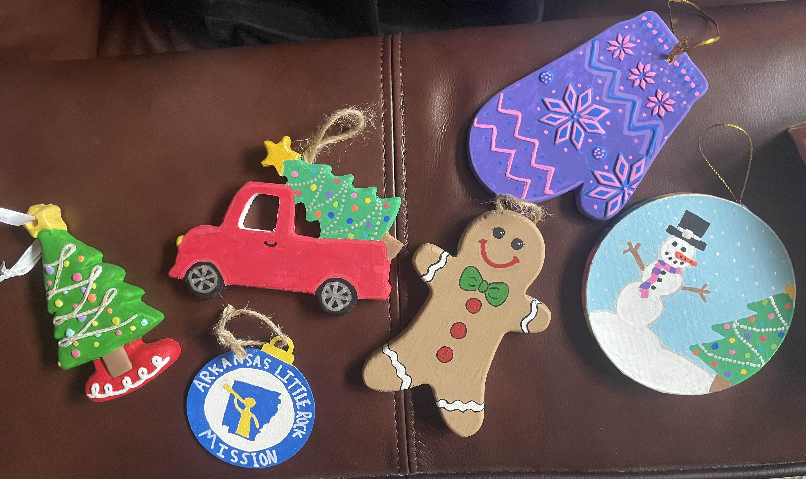
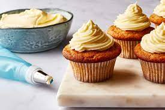

I have a lot of hobbies, but not alot of time to do them. The classic time crunch of a college student. I'd like to share just a few of the hobbies I have and new talents I'm working to develop...
I have been playing tennis since Jr.High. I played all 4 years on my High school team and I love it. Recently I've been getting more into pickleball since more people play it and it's a lot of fun. A lot of the skils from tennis translate so that is nice.

I've always enjoyed crafts, especially paiting, but I didn't do it often cause I thought I was bad at it and it got frustrating. However, during covid I gave it a fair shot and spent a lot of time just painting for fun. All these ornaments you see pictured are ones that I've painted.
I have been baking most of my life, I enjoy making all kinds of desserts and sharing them with family and friends. I'm most proud of my ability to make cream puffs. It was once a dream of mine to start a Youtube channel and make videos similar to the one you see below.
I love to sing, espeically in the car or in choir. Recently, I've been developing my piano skill so I can accompany myself when I sing.